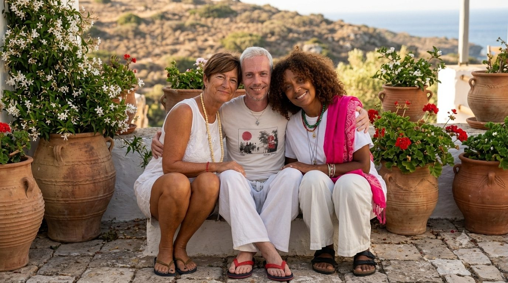

Maria Gorette
Co-fondatrice

Seminari, eventi e percorsi di crescita personale per il benessere di corpo, mente e spirito.
È qui che le nostre tre anime si sono incontrate, lungo un cammino di evoluzione personale e spirituale. Riconoscendoci e unendoci nel profondo, abbiamo scelto di condividere i nostri talenti, le nostre esperienze, i successi e le nostre fragilità.
Crediamo in una guarigione totale, dove ogni sfumatura dell'essere non è un frammento isolato, ma una sola armonia fusa nel tutto.
Ti accompagniamo a scoprire la tua strada, perché siamo tutti parte dello stesso, meraviglioso viaggio.
«Crediamo che nessuna tradizione custodisca da sola tutta la Verità.
Ogni autentico cammino, quando nasce dal cuore,
conduce alla stessa Sorgente.»
Non desideriamo proporre una nuova filosofia né sostituire le tradizioni esistenti.
Crediamo che ogni autentico cammino di ricerca custodisca una parte di una conoscenza più ampia. Quando impariamo ad ascoltare senza dividere, scopriamo che linguaggi diversi possono raccontare la stessa realtà.
È da questa convinzione che nasce il progetto Custodi della Sorgente.
Crediamo che corpo, mente, anima e spirito non siano realtà separate, ma espressioni di un unico Essere.
Ogni autentico percorso di guarigione e di crescita nasce dall'ascolto e dall'armonizzazione di tutte queste dimensioni.
Ogni tradizione custodisce una parte della stessa Verità.
Medicina Occidentale, Medicina Tradizionale Cinese, Ayurveda, Sciamanesimo e altri cammini non sono in competizione: possono dialogare, arricchirsi reciprocamente e offrire una comprensione più ampia dell'essere umano.
Rinascere nelle proprie energie di sangue e nei desideri sacri di Vita, Salute e Pace: questo è il Risveglio del Raggio di Salute e Vita.
Il Sole di infinito ed eterno Amore che crea e costruisce ogni energia ed ogni materia.
La Sorgente è un eterno Padre e Madre che accettano, perdonano e amano i propri figli.
Riconosciamo nella Madre Terra una Maestra di vita.
Ogni essere vivente è parte di un'unica rete di relazioni. Ritrovare un rapporto autentico con la Natura significa ritrovare anche una parte dimenticata di noi stessi, imparando il rispetto, la gratitudine e l'equilibrio.
Onoriamo gli Antenati e riconosciamo il valore di chi ci ha preceduto.
Le nostre radici custodiscono memoria, insegnamenti e forza. Guardare con rispetto al passato ci permette di vivere con maggiore consapevolezza il presente e di lasciare un'eredità migliore alle generazioni future.
Crediamo che la pace non sia soltanto l'assenza di conflitto, ma uno stato di coscienza che nasce nel cuore di ogni persona.
Ogni gesto di ascolto, ogni atto di consapevolezza e ogni scelta guidata dall'Amore contribuiscono a trasformare il mondo che condividiamo.
La Pace è uno stato di coscienza e di diritto che nasce nelle Anime e nei loro Cuori.
Ogni fondatore porta un dono, una storia e una prospettiva unica. Insieme danno vita a uno spazio di crescita, ascolto e trasformazione.
Co-fondatrice

Co-fondatrice

Co-fondatore
Ogni percorso nasce dall'incontro tra esperienza, ricerca interiore e pratica quotidiana. I seminari e i trattamenti vengono proposti nelle sedi di Monopoli e Milano, secondo le competenze dei singoli Custodi della Sorgente.
Sede: Monopoli con Melissa e Maria G.
Sede: Milano con Paolo
Sede: Monopoli con Melissa e Maria
Sede: Milano con Melissa e Paolo
Sede: Monopoli con Melissa
Sede: Monopoli con Maria G. e Melissa
Sede: Monopoli con Maria G.
Sede: Milano con Paolo
Sede: Monopoli con Melissa e Maria G.
Appuntamenti per vivere la pratica dal vivo, in presenza, insieme alla nostra comunità.
Un weekend immersi nel bosco, tra pratiche di respiro guidato e silenzio condiviso.
Giornata di formazione teorica e pratica per ricevere la prima sintonizzazione Reiki.
I rimedi naturali della stagione, tra teoria e laboratorio pratico in piccoli gruppi.
Una serata di meditazione guidata per chiudere il cerchio dell'anno tutti insieme.
Ogni seminario lascia un'impronta fatta di incontri, sorrisi, silenzi e trasformazioni. Questa galleria raccoglie alcuni istanti del nostro Cammino condiviso.
Pensieri, riflessioni, meditazioni, articoli ed esperienze nate lungo il Cammino. Ogni Quaderno è una condivisione autentica, scritta per nutrire il dialogo tra Corpo, Mente, Anima e Spirito.
Il silenzio non è assenza di suono, ma presenza a sé stessi. In questo Quaderno esploriamo come coltivare uno spazio interiore di ascolto, anche nei ritmi frenetici della vita moderna.
Leggi il QuadernoOgni battito del tamburo è una preghiera che riporta al cuore di Madre Terra. Una riflessione sul ritmo come linguaggio ancestrale e sulla guarigione che nasce dall'ascolto profondo della Natura.
Leggi il QuadernoQuindici anni accanto a chi si avvicina alla soglia mi hanno insegnato che la cura più profonda non è tecnica, ma presenza. Un viaggio tra Cure Palliative, Sciamanesimo e la sacralità di ogni incontro.
Leggi il QuadernoEsperienze autentiche di chi ha condiviso un tratto di strada con Custodi della Sorgente.
Scriveteci per il prossimo seminario o per un percorso di formazione su misura.
Risponderemo entro 24 ore.